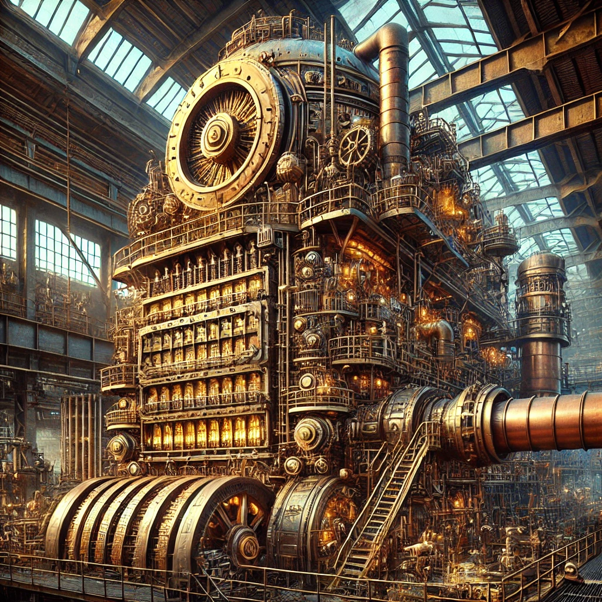

Aetherial Engines are vital technological marvels in the world of Cirque Electrique, responsible for producing Pax Aetherium —the currency and energy source that fuels society. These devices vary in size, complexity, and refinement, reflecting the social strata they serve. From the crude, worn devices of the working class to the opulent, polished machines of the elite, each Aetherial Engine embodies the technological and social divisions within this dystopian world.
Overview: The Crude Aetherial Engine is an intricate, somewhat bulky device designed to be worn on the forearm like a gauntlet. It is rudimentary and rugged, crafted primarily from copper and brass, showing visible wear and tarnish from repeated use. The engine is a common sight among the working class, emphasizing function over form.
Design Elements:
Material and Structure:
The frame is a latticework of tarnished copper and brass, featuring large, exposed gears that turn slowly as the device functions. Braided copper wires hum with low, pulsating energy, and thick leather straps, reinforced with brass rivets, secure the device to the wearer’s arm, adding to its rough-hewn, industrial aesthetic.
Phantasmal Energy Collector:
A small, vented chamber resembling a miniature smokestack sits atop the gauntlet. This collector draws in phantasmal energy, pulsing with an eerie, dim light, a clear visual indicator of the engine’s work.
Ether Storage and Coin Minting:
A cylindrical chamber made of frosted glass and copper stores and distills raw energy into a thick, sluggish liquid form of Crude Ether. Inside, small mechanical arms collect drops of this liquid and deposit them into a separate compartment where they join together and solidify into the form of a coin.
Coin Extrusion:
At the base of the gauntlet, near the wrist, a slot framed by a toothed, brass aperture extrudes the minted Copper Aetherium. Small bursts of steam occasionally escape as each coin is pressed and formed, accompanied by a hammering sound reminiscent of traditional coin minting.
Size and Wear:
The device, roughly the length of a forearm, is cumbersome yet manageable. It is a practical tool, cobbled together with a mix of necessity and brute force, embodying the industrial grit of the lower class.
Overview: The Distilling Aetherial Engine is a more refined and compact device, designed to cater to the needs of the middle class. It is sleek, streamlined, and significantly more efficient than the Crude Engine, striking a balance between industrial utility and aesthetic appeal.
Design Elements:
Material and Structure:
Constructed from a cobalt-blue alloy that gleams under light, the frame offers both durability and sophistication. Smaller, refined gears are enclosed within transparent glass chambers, allowing the user to observe the intricate mechanical processes. Polished brass accents contrast with the dark blue metal, while deep navy leather straps secure the device.
Phantasmal Energy Collector:
An advanced, compact funnel made from polished brass is located at the top, filtering and drawing in phantasmal energy. The collector emits a soft blue glow, signaling its active state.
Ether Storage and Coin Minting:
Within a crystal-clear cylindrical chamber, raw energy is distilled into a vibrant, cobalt-blue liquid Ether. Precision mechanisms then gather the liquid and transfer it into a minting compartment where it is compressed into cobalt-colored Pax Aetherium.
Coin Extrusion:
Cobalt Aetherium are dispensed through a slim, mechanical slot near the wrist, accompanied by a soft chime. The slot is flanked by delicate, brass-filigree panels that glow faintly with neon-blue light, adding a refined touch.
Size and Wear:
The Distilling Engine is more compact and comfortable, fitting snugly on the forearm. Its polished, professional look makes it the preferred choice for those who value both function and style.
Overview: The Refined Aetherial Engine is the pinnacle of Aetherial technology, designed for the upper class who prioritize elegance and efficiency. This engine seamlessly blends advanced technology with aesthetic luxury, serving as both a functional machine and a status symbol.
Design Elements:
Material and Structure:
Constructed from polished platinum and silver, the engine features intricate engravings and crystal windows that reveal high-grade alloy gears, ensuring silent, frictionless operation. Its slim structure resembles ornate arm jewelry more than a machine.
Phantasmal Energy Collector:
The energy collector is an elegant, almost invisible funnel integrated seamlessly into the design. It draws in phantasmal energy with quiet efficiency, marked only by a subtle shift in the opalescent glow.
Ether Storage and Coin Minting:
Ether is stored in a floating, crystal-clear orb within the engine’s frame, containing shimmering, liquid refined Ether. The minting process is smooth and silent, transitioning seamlessly into opal-colored Pax Aetherium.
Coin Extrusion:
Opal Aetherium are extruded through a sleek, hidden slot at the side of the engine, accompanied by a melodic chime. The slot is edged with platinum and embedded with glowing opals, adding a touch of grace.
Size and Wear:
The Refined Aetherial Engine is the most compact and lightweight, worn more like an accessory than a tool. Its luxurious design makes it a status symbol, as much a piece of art as it is technology.
Overview: The Pure Aetherial Engine is the crowning achievement of technomantic engineering, a masterpiece that transcends functionality to embody luxury and power. Unlike its more compact counterparts, this device is larger, roughly the size of a chandelier or humidifier, reflecting its superior capabilities in distilling Pure Ether into Gold Aetherium.
Design Elements:
Material and Structure:
The engine is made from polished brass, platinum, and iridescent crystal components, with a frame of interlocking gears, pipes, and coils arranged in an intricate, harmonious design. Supported by elegantly curved legs adorned with intricate filigree, the structure pulses with neon accents.
Phantasmal Energy Collector:
A large, crystal-encased chamber at the top draws in and collects phantasmal energies. Crowned with an ornate, spiraling antenna made of platinum and inlaid with electrum, the collector channels energy with unparalleled efficiency, glowing with a vibrant golden light.
Ether Distillation and Refinement:
The distillation process occurs within a series of interconnected glass tubes and reservoirs, transforming raw energy into pure, liquid Ether. The refinement process involves multiple stages of filtration, compression, and condensation within platinum-plated cylinders decorated with glowing runes and neon lights.
Coin Minting and Extrusion:
The central minting chamber at the base solidifies the refined Ether into Gold Aetherium. The process is accompanied by a melodic chime, with coins extruded through a golden slot framed by electrum trim and backlit by a soft, golden glow.
Size and Presence:
The Pure Aetherial Engine stands as a centerpiece in any room, commanding attention with its imposing size and intricate details. It is a symbol of luxury and power, a fusion of form and function that is both beautiful and essential.
While personal Aetherial Engines cater to individual needs, Industrial Aetherial Engines are designed for mass production. These “mints” produce the very lifeblood of their communities, distributing Pax Aetherium to workers, customers, investors, and others that do not possess their own Aetherial Engines. These factory-grade machines are housed within large facilities, producing vast quantities of Pax Aetherium to fuel the broader economy. Each type of Industrial Engine reflects the same hierarchical structure as their personal counterparts, with varying levels of refinement and sophistication.
Overview: The Industrial Crude Aetherial Engine is a massive, factory-grade apparatus designed to churn out large quantities of Copper Aetherium. Housed within the heart of mining facilities or industrial complexes, it focuses on sheer output, embodying the rugged, industrial charm of Aetherial technology.

Design Elements:
Material and Structure:
Built from thick, reinforced steel and cast iron, with copper and brass components, the engine features large, riveted panels and exposed gears that turn slowly but relentlessly. It is anchored to the factory floor with heavy bolts, filling the space with the constant clanking of machinery and the hiss of steam.
Phantasmal Energy Collector:
A towering smokestack-like collector dominates the top, belching puffs of greenish smoke as it draws in phantasmal energy. The collector is encased in a rusted metal cage, with copper coils crackling with low-level energy. The collected energy swirls violently, reflecting its raw nature.
Ether Storage and Coin Minting:
The distillation chamber is a vast, cylindrical tank of blackened steel, with thick glass windows revealing sluggish, muddy liquid Ether. The minting mechanism below is a noisy assembly of gears, hammers, and conveyor belts, pressing out coins in rapid succession with a deafening racket.
Size and Scale:
Occupying an entire section of a factory floor, the Industrial Crude Engine is a gritty, imposing machine surrounded by grime-covered workers. Its size and power reflect the raw, unrefined force driving the production of Copper Aetherium.
Overview: The Industrial Distilling Aetherial Engine is a mid-tier machine designed for mass-producing Cobalt Aetherium. More refined and compact than its Crude counterpart, it balances productivity with the quality of output, making it a mainstay in middle-class industrial settings.
Design Elements:
Material and Structure:
Housed in a polished steel frame with cobalt blue accents, the engine’s modular structure allows for easy maintenance and upgrades. Heavily insulated to minimize noise, the machine operates quietly, with brass piping carrying steam and energy to various components. Neon-lit gauges monitor the process.
Phantasmal Energy Collector:
A sleek, cylindrical chamber with a cobalt blue glow houses the energy collector. Precision-engineered intake valves regulate the flow of energy, ensuring a steady, controlled supply.
Ether Distillation and Coin Minting:
The streamlined, glass-encased distillation chamber purifies energy into clear, liquid Ether. The minting mechanism operates with near silence, pressing coins with precision and consistency, each one emerging with a metallic sheen.
Size and Scale:
Designed for compact factory settings, the Industrial Distilling Engine is often arranged in rows to maximize space. It is efficient and reliable, producing a steady stream of Cobalt Aetherium without the chaos of the Crude version.
Overview: The Industrial Refined Aetherial Engine is the height of mass-production technology for upper-class Pax Aetherium, specifically Opal coins. This machine is a marvel of engineering, combining high output with elegance and precision.
Design Elements:
Material and Structure:
Constructed from polished, high-grade alloys with a glossy finish, the engine’s streamlined, minimalist structure hides every component behind smooth panels of glass and platinum. The machine is supported by a base of marble or polished stone, with gold and silver accents tastefully integrated.
Phantasmal Energy Collector:
The energy collector is an elegantly designed chamber with a crystal-clear casing, revealing the purest phantasmal energy. Gold filigree lines the intake valves, and the collected energy glows with a soft, opalescent light.
Ether Distillation and Coin Minting:
Liquid Ether moves through platinum coils and crystal tubes in the distillation chamber, gradually purifying into a substance of unparalleled clarity. The minting mechanism presses coins in perfect synchronization, each one a flawless example of Opal Aetherium.
Size and Scale:
Intended for exclusive facilities, the Industrial Refined Engine’s compact size belies its power and efficiency. It produces Opal Aetherium with minimal noise or disruption, reflecting the ease and elegance of wealth production by the upper class.
Steampunk and Electropunk Elements:
Design Aesthetics:
The Industrial Refined Engine features polished brass gears, platinum pistons, and crystal gauges, illuminated by pulsing neon lights. The blend of traditional steampunk and modern electropunk technology is carefully crafted to reflect the luxury and refinement of the upper class, exuding an air of quiet power and control.
--- End of Aetherial Engines ---